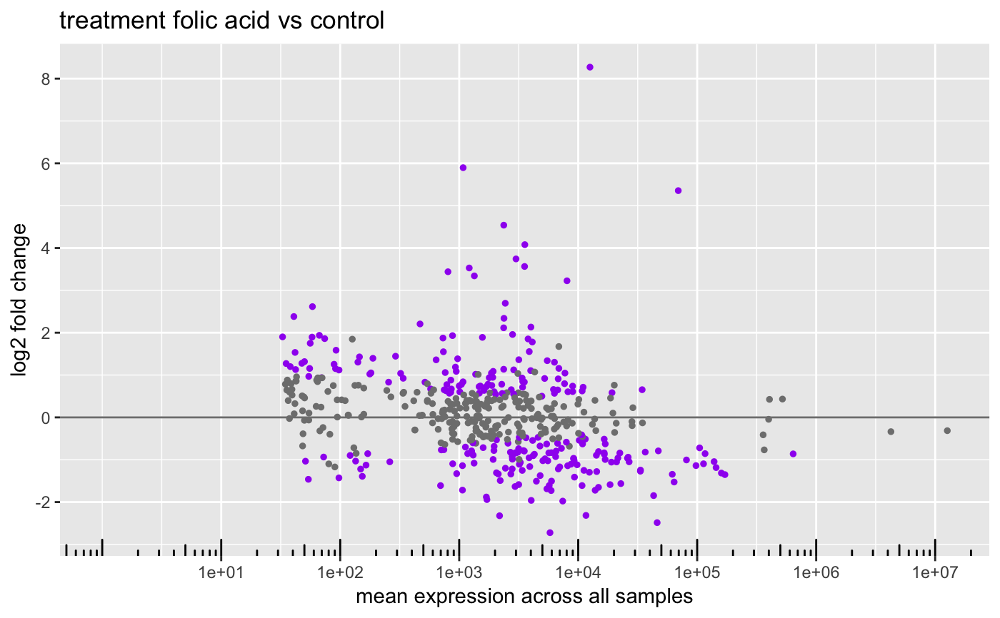
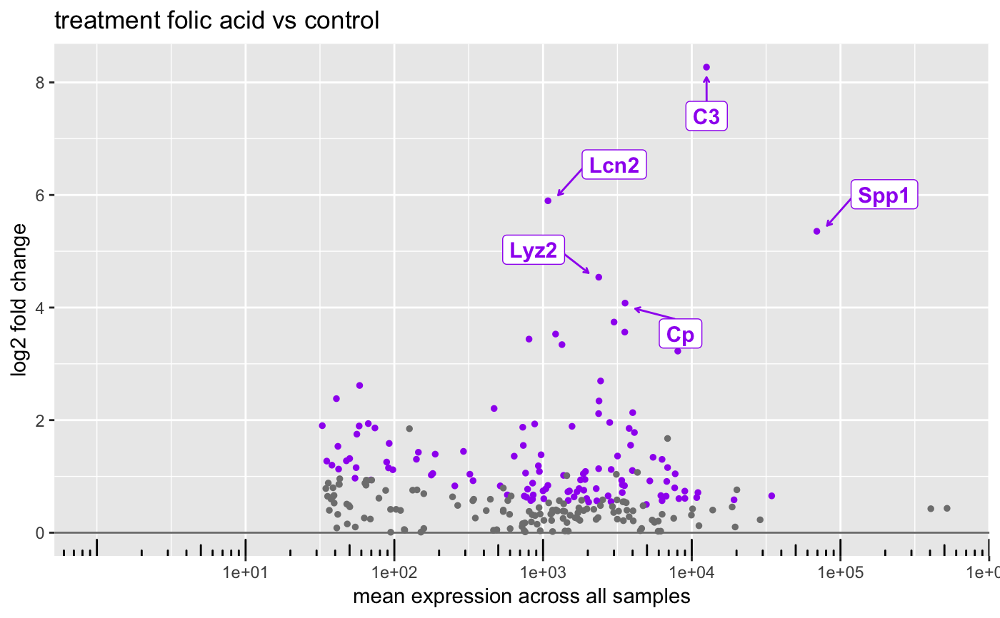
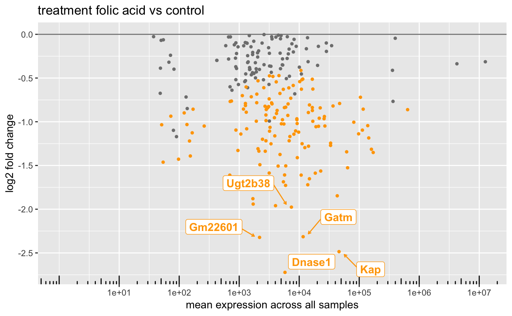
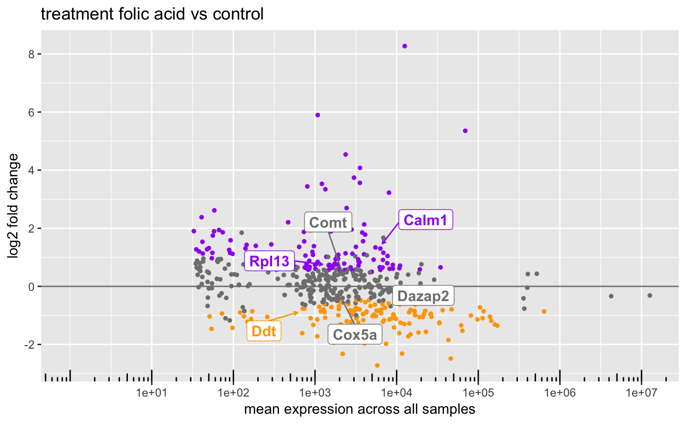

An MA plot is an application of a Bland–Altman plot for visual representation of genomic data. The plot visualizes the differences between measurements taken in two samples, by transforming the data onto M (log ratio) and A (mean average) scales, then plotting these values.
# S4 method for DESeqResults plotMA(object, alpha, lfcThreshold = 0L, genes = NULL, gene2symbol = NULL, ntop = 0L, direction = c("both", "up", "down"), pointColor = "gray50", sigPointColor = c(upregulated = "purple", downregulated = "orange"), return = c("ggplot", "data.frame"))
Arguments
| ... | Additional arguments. |
|---|---|
| object | Object. |
| alpha |
|
| lfcThreshold |
|
| genes |
|
| gene2symbol |
|
| ntop |
|
| direction |
|
| pointColor |
|
| sigPointColor |
|
| return |
|
Value
ggplot.
See also
Other Differential Expression Functions: alphaSummary,
contrastName, plotDEGHeatmap,
plotDEGPCA, plotVolcano,
resultsTables
Examples
gene2symbol <- gene2symbol(bcb_small) # DESeqResults ==== # Color DEGs in each direction separately plotMA( object = res_small, sigPointColor = c( upregulated = "purple", downregulated = "orange" ) )# Label DEGs with a single color plotMA(res_small, sigPointColor = "purple")# Directional support plotMA( object = res_small, direction = "up", ntop = 5L, gene2symbol = gene2symbol )plotMA( object = res_small, direction = "down", ntop = 5L, gene2symbol = gene2symbol )# Label genes manually plotMA( object = res_small, genes = head(rownames(res_small)), gene2symbol = gene2symbol )